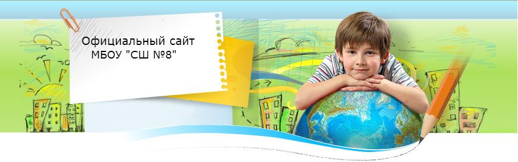

<!DOCTYPE html>
<html>
<head>
	<meta charset="utf-8" />
	<!--[if lt IE 9]><script src="https://cdnjs.cloudflare.com/ajax/libs/html5shiv/3.7.3/html5shiv.min.js"></script><![endif]-->
	<title></title>
	<meta name="keywords" content="" />
	<meta name="description" content="" />
	<link href="style.css" rel="stylesheet">
	<script src="sw.js"></script>
</head>

<body>

<div class="wrapper">

	<header class="header">
		
	</header>

	<div class="middle">

		<div class="container">
			<main class="content">

<h1>Страничка психолога</h1><!-- <body> --><pre>
<span style="font-size:16px;"><span style="font-family:Times New Roman,Times,serif;"><a href="doc/5_klass.docx" style="text-decoration: none; color: rgb(0, 0, 0);"><span style="color:#0000cd;"><font style="font-size: 14pt;">Рекомендации родителям пятиклассников</font></span></a></span></span><o:p></o:p><span style="font-size:16px;"><span style="font-family:Times New Roman,Times,serif;">

<font style="font-size: 14pt;"><a href="doc/pamjatka_1_kl.docx" style="color: rgb(0, 105, 169);">Памятка для родителей первоклассников</a></font>

<a href="doc/kak_gotovit_domashnee_zadanie.docx" style="color: rgb(0, 105, 169); font-family: 'Times New Roman'; font-size: 19px; line-height: normal;">Секреты успешной домашней работы</a>

</span></span><span style="font-size:18px;"><span style="font-family:Times New Roman,Times,serif;"><a href="doc/kak_vyjavit_zhestokoe_obrashhenie.pdf">Как выявить жестокое обращение</a><span style="font-size:16px;"><span style="font-family:Times New Roman,Times,serif;">

</span></span><a href="doc/kak_vyjavit_zhestokoe_obrashhenie-2.pdf">Как выявить жестокое обращение-2</a><span style="font-size:16px;"><span style="font-family:Times New Roman,Times,serif;">

</span></span><a href="doc/kak_vyjavit_zhestokoe_obrashhenie-3.pdf">Как выявить жестокое обращение-3</a><span style="font-size:16px;"><span style="font-family:Times New Roman,Times,serif;">

</span></span><a href="doc/kak_vyjavit_zhestokoe_obrashhenie-4.pdf">Как выявить жестокое обращение-4</a><span style="font-size:16px;"><span style="font-family:Times New Roman,Times,serif;">

</span></span><a href="doc/kak_pomoch_rebenku.pdf"><span style="line-height: 25.6000003814697px;">Как помочь ребенку</span></a><span style="font-size:16px;"><span style="font-family:Times New Roman,Times,serif;">

</span></span><a href="doc/profilaktika_zhestokogo_obrashhenija_s_detmi.pdf">Профилактика жестокого обращения с детьми</a><span style="font-size:16px;"><span style="font-family:Times New Roman,Times,serif;">

</span></span><a href="doc/formy_i_posledstvija_nasilija.pdf">Формы и последствия насилия</a><span style="font-size:16px;"><span style="font-family:Times New Roman,Times,serif;">

</span></span><a href="doc/detjam_o_ehkzamene.pdf">Детям о экзамене</a><span style="font-size:16px;"><span style="font-family:Times New Roman,Times,serif;">

</span></span><a href="doc/roditeljam_o_ehkz.pdf">Родителям о экзамене</a><span style="font-size:16px;"><span style="font-family:Times New Roman,Times,serif;">

</span></span><a href="doc/pamjatka_dlja_uchenika.ehkzamen.pdf">Памятка по экзаменам</a></span></span></pre>

<p><a href="doc/sluzhba_primirenija.docx"><span style="font-size:16px;"><span style="font-family:Times New Roman,Times,serif;">Школьная служба примирения</span></span></a></p>

			</main>
		</div><!-- .container-->

		<aside class="left-sidebar">
<table class="boxTable"><tbody><tr><th>Меню</th></tr><tr><td class="boxContent">
<div id="uMenuDiv1" class="uMenuV" style="position:relative;"><ul class="uMenuRoot">
<li><a href="index.html"><span>Главная страница</span></a></li>
<li><a href="ispolnenie_zakona_ob_obrazovanii.html"><span>Сведения об образовательной организации</span></a></li>
<li><a href="zvonki.html"><span>Расписание звонков</span></a></li>
<li><a href="prvila_povednija_na_zheleznoj_dorogi.html"><span>Правила поведния на железной дороги</span></a></li>
<li><a href="ehkzameny.html"><span>ГИА</span></a></li>
<li><a href="stranichka_psikhologa.html"><span>Социально-психологическая служба</span></a></li>
<li><a href="vospitatelnaja_rabota.html"><span>Воспитательная работа</span></a></li>
<li><a href="zdorovyj_obraz_zhizni.html"><span>Здоровый образ жизни</span></a>
<li><a href="dnevnik_ehlektronnyj.html"><span>АВЕРС - электронный журнал</span></a></li>
<li><a href="infrmacija_o_pravakh_i_objazannostjakh_dlja_detej_roditelej_uchitelej.html"><span>Информация о правах и...</span></a></li>
<li><a href="antikorrupcija.html" target="_blank"><span>Антикоррупция</span></a></li>
<li><a href="gotov_k_trudu_i_oborone.html"><span>Готов к труду и обороне</span></a></li>
<li><a href="prizyvniku.html"><span>Призывнику</span></a></li>
<li><a href="inkljuzivnoe_obrazovani.html"><span>Инклюзивное образование</span></a></li>
<li><a href="profsojuz_organizacii.html"><span>Профсоюз организации</span></a></li>
<li><a href="shkolnoe_pitanie.html"><span>Школьное питание</span></a></li>
</ul></div>


		</aside><!-- .left-sidebar -->
	</div><!-- .middle-->

	<footer class="footer">
		<strong></strong>
	</footer><!-- .footer -->

</div><!-- .wrapper -->

</body>
</html>